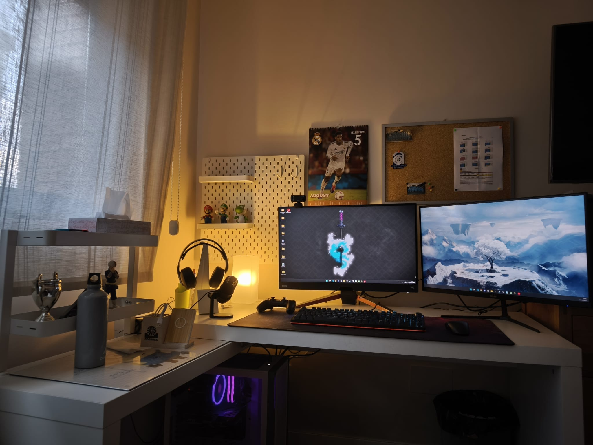

¿Quién soy fuera del trabajo?
Descubre mis hobbies, pasiones e intereses personales.
Mis Intereses y Hobbies
Más allá del código, disfruto de la fotografía, la lectura de ciencia ficción y el senderismo por los paisajes de Asturias. Soy un gran aficionado a los deportes de equipo, especialmente el fútbol, y me apasionan los videojuegos tanto retro como modernos. ¡Siempre aprendiendo y explorando nuevas pasiones!
En mi tiempo libre, me gusta descubrir nuevos restaurantes y viajar a lugares con historia. También dedico tiempo a proyectos personales de programación que no están relacionados con el trabajo. Creo firmemente en el equilibrio entre el trabajo y la vida personal para un desarrollo integral.
Conectar conmigoLo que me apasiona
Fotografía
Capturar momentos y paisajes, especialmente durante mis viajes y aventuras.
Videojuegos
Desde clásicos retro hasta los últimos títulos, los videojuegos son mi forma favorita de relajarme y explorar mundos virtuales.
Viajar
Conocer nuevas culturas, probar gastronomías locales y explorar rincones históricos y naturales del mundo.
Lectura
Sumérgeme en mundos de ciencia ficción y fantasía, explorando ideas y expandiendo mi imaginación.
Deportes de Equipo
Disfruto la camaradería y el desafío del fútbol y otros deportes de equipo, manteniendo un estilo de vida activo.
Gastronomía
Explorar la diversidad culinaria, descubrir nuevos restaurantes y experimentar con sabores diferentes.
Mi Setup

Así luce mi espacio de trabajo: tecnología, comodidad y un toque personal.